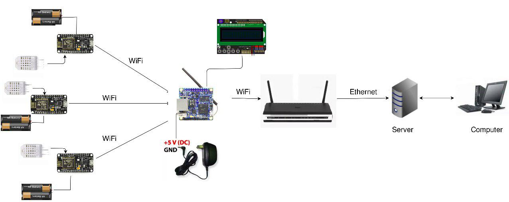
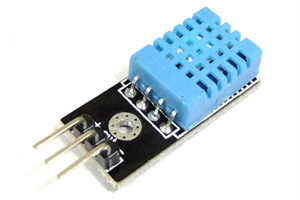
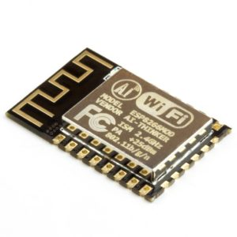
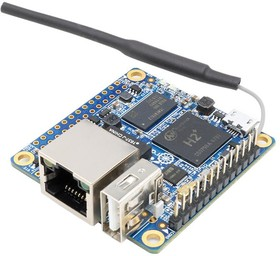
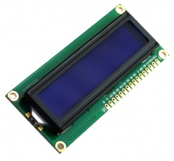

За оценкой состояния помещения отвечает датчик влажности и температуры. Вывод информации о состоянии помещения будет осуществляться на LCD дисплей непосредственно в самом помещении, а также данные мониторинга будут отправляться на главный сервер в здании. Если нормы СанПиН нарущены, то начинает мигать светодиод, оповещая об этом преподавателя, находящегося в аудитории. А также будет происходить оповещения технического персонала.
Предусмотрен доступ к данным мониторинга со всех датчиков через специальный web-сайт и мобильное приложения.

С помощью датчиков DHT22 снимаются показания температуры и влажности и используя микроконтроллер ESP8266 отправляются по Wi-Fi сети на локальный сервер внутри помещения, в роли которого выступает микрокомпьютер Orange Pi Zero. На локальном сервере анализируются полученные данные и отображаются на LED дисплее. При не соответствии показаний СанПиН загорается красный светодиод, предупреждая преподавателя, находящегося в аудитории. Данные с локального сервера отправляются на главный сервер в здании.
Датчик DTH11 необходим для поддежания температуры и влажности в помещении. Датчик состоит из двух частей – емкостного датчика температуры и гигрометра. Первый используется для измерения температуры, второй – для влажности воздуха. Находящийся внутри чип может выполнять аналого-цифровые преобразования и выдавать цифровой сигнал, который считывается посредством микроконтроллера.


ESP8266 – микроконтроллер с интерфейсом WiFi, который имеет возможность исполнять программы из флеш-памяти.
Контроллер недорогой, обладает небольшим количеством внешних элементов и имеет следующие технические параметры:
С помощью данного микроконтроллера данные с датчиков передаются на локальную станцию в качестве которого выступает Orange Pi Zero.
Одноплатный компьютер Orange Pi Zero на базе четырех ядерного процессора Allwinner H2(+) quad core Cortex A7 процессор @ 1.2 ГГц c GPU Mali-400MP2 GPU @ 600 МГц, и имеющего 256 Мб DDR3 SDRAM. Он может работать с ОС: Android, Lubuntu, Debian, Raspbian. На базе Orange Pi Zero можно слушать музыку, смотреть видео, играть в игры, организовывать различные контроллеры и управляющие системы.


Светододный экран (LED) - устройство отображения и передачи информации. Необходим для отображения информации о состоянии помещения.